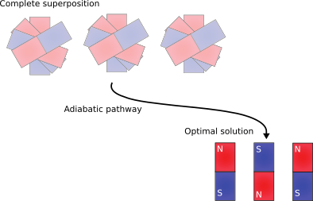
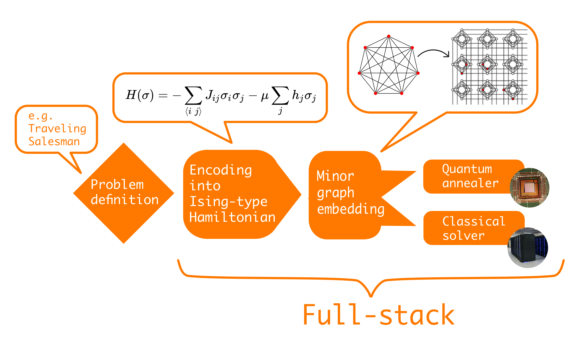
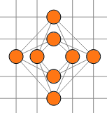
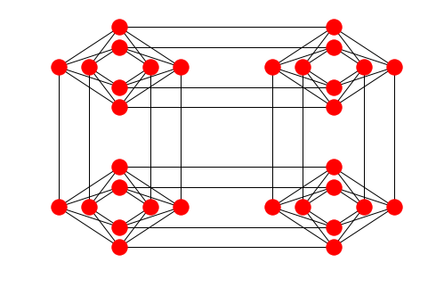
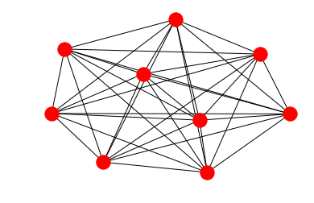
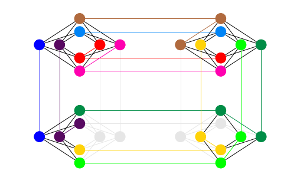

16. Adiabatic Quantum Computing#
Previously we introduced the gate model quantum computer as a universal way of transforming quantum states into other quantum states. Today, we are looking at a different model called that adiabatic quantum computing, which can also achieve universal quantum computations. But to do this, we have to understand a bit more of the underlying physics. So we talked about Hamiltonians, which describe the energy of the system, and we talked about unitaries, which describe the evolution of a system. So let’s go back to our classical Ising model or the quantum mechanical description, where we had this thing where that operator is acting.
This was the energy of the system. It was the expectation value of the Hamiltonian in a particular quantum state. So in that view, just look at this H\mid\psi\rangle – the Hamiltonian acting on the state. It has the exact same form as a unitary acting on it U\mid\psi\rangle to get the evolution of the state . And there is actually a correspondence. And this is what is described by the Schrodinger equation.
It says that the temporal evolution of the system \frac{d}{dt}\mid\psi(t)\rangle is described by the Hamiltonian H\mid\psi(t)\rangle applied to that state– that time-dependent state. And then you have the imaginary number here and the reduced Planck constant, but the main part is that the temporal evolution depends on the Hamiltonian. And if you solve it, in the case where the Hamiltonian does not depend on time, and what you get is this formula, which is exactly the unitary acting on a particular state for some duration t.
Basically, every unitary operation has an underlying Hamiltonian. And every gate in a gate model quantum computer has an underlying Hamiltonian. And the Hamiltonian is always a Hermitian operator, which means that it’s adjoined as itself, which implies actually why this operation is unitary. So there’s a very direct connection between the mathematical properties of these objects. So with that in mind, let’s take a look at the adiabatic theorem.
16.1. Adiabatic Theorem#
Imagine that you have two Hamiltonians. One, which I call H0 is just a transverse field.
It’s just a transverse field acting on a number of sites. We know that the ground state– the lowest energy state of this– is the equal superposition. Now, we can take another Hamiltonian– for instance, our classical Ising model
– and they can take a time-dependent Hamiltonian, which mixes the two.
It starts in 0 and goes all the way up to 1. So at t equals 0, it’s just a transverse field and at t equals 1, it’s only the classical Ising model. And if we changed this time sufficiently slow and we start in the ground state of this Hamiltonian, then we end up in the ground state of this Hamiltonian. And as I explained in the video on the classical Ising model, this is actually a hard problem to solve for nature because it can happen that the system gets trapped in a local optimum. Whereas here, we are applying this trick– this adiabatic transition– to go from a ground state and ensure that we stay in the lowest energy solution throughout the change, and then we can read out the solution– the global solution– of our problem. The caveat here is that there is a speed limit. A gap of a Hamiltonian means the difference between the ground state, the lowest energy state, and the first excited state. And if you denote the gate by delta, then each and every one of the time steps in this change will have a different gap. You have to take the minimum of that and square it. And the speed limit will depend on the inverse of that. So if there is a very, very close case of the excited state being very close to the ground state, then the speed limit can be very, very bad. So it’s not true that you can solve, say, NP-hard problems faster or exponentially faster because those problems, the hard cases typically have a very, very, very tiny gap, which we are implied that the speed limit is actually exponential. So we can use this to perform universal calculations.
That’s called adiabatic quantum computing. So in this case, the Hamiltonian has this part \(-\sum_{<i,j>}J_{ij}\sigma_{i}^{z}\sigma_{j}^{z}\), which is just your classical Ising model. And we have to add one more term \(-\sum g_{i}g_{j}\sigma_{i}^{x}\), which is an interaction between transverse fields. So it’s not the transverse field Ising model because there, the transverse field only acts on the individual sites. Here, you have interaction between these transverse fields. If you are able to implement this Hamiltonian in the hardware, then this model can simulate universal quantum calculations, gate model quantum calculations, and therefore it can transform any quantum state into any other quantum state.
Checkbox
• The time-dependent Schrödinger equation establishes the connection between the Hamiltonian that we discussed in the lecture on quantum many-body systems and the untiary operations we talked about in transforming quantum states. Is it true that every Hamiltonian implies unitary operators? True
• Does the adiabatic theorem allow a physics trick to solve NP-hard computational problems exponentially faster? No
• Adiabatic quantum computing… is universal if it is able to implement a specific Hamiltonian.
When we talk about quantum computing, we actually talk about several different paradigms. The most common one is gate-model quantum computing, in the vein we discussed in the previous notebook. In this case, gates are applied on qubit registers to perform arbitrary transformations of quantum states made up of qubits.
The second most common paradigm is quantum annealing. This paradigm is often also referred to as adiabatic quantum computing, although there are subtle differences. Quantum annealing solves a more specific problem – universality is not a requirement – which makes it an easier, albeit still difficult engineering challenge to scale it up. The technology is up to 2000 superconducting qubits in 2018, compared to the less than 100 qubits on gate-model quantum computers. D-Wave Systems has been building superconducting quantum annealers for over a decade and this company holds the record for the number of qubits – 2048. More recently, an IARPA project was launched to build novel superconducting quantum annealers. A quantum optics implementation was also made available by QNNcloud that implements a coherent Ising model. Its restrictions are different from superconducting architectures.
Gate-model quantum computing is conceptually easier to understand: it is the generalization of digital computing. Instead of deterministic logical operations of bit strings, we have deterministic transformations of (quantum) probability distributions over bit strings. Quantum annealing requires some understanding of physics, which is why we introduced classical and quantum many-body physics in a previous notebook. Over the last few years, quantum annealing inspired gate-model algorithms that work on current and near-term quantum computers (see the notebook on variational circuits). So in this sense, it is worth developing an understanding of the underlying physics model and how quantum annealing works, even if you are only interested in gate-model quantum computing.
While there is a plethora of quantum computing languages, frameworks, and libraries for the gate-model, quantum annealing is less well-established. D-Wave Systems offers an open source suite called Ocean. A vendor-independent solution is XACC, an extensible compilation framework for hybrid quantum-classical computing architectures, but the only quantum annealer it maps to is that of D-Wave Systems. Since XACC is a much larger initiative that extends beyond annealing, we choose a few much simpler packages from Ocean to illustrate the core concepts of this paradigm. However, before diving into the details of quantum annealing, it is worth taking a slight detour to connect the unitary evolution we discussed in a closed system and in the gate-model paradigm and the Hamiltonian describing a quantum many-body system. We also briefly discuss the adiabatic theorem, which provides the foundation why quantum annealing would work at all.
16.2. Unitary evolution and the Hamiltonian#
We introduced the Hamiltonian as an object describing the energy of a classical or quantum system. Something more is true: it gives a description of a system evolving with time. This formalism is expressed by the Schrödinger equation:
where \(\hbar\) is the reduced Planck constant. Previously we said that it is a unitary operator that evolves state. That is exactly what we get if we solve the Schrödinger equation for some time \(t\): \(U = \exp(-i Ht/\hbar)\). Note that we used that the Hamiltonian does not depend on time. In other words, every unitary we talked about so far has some underlying Hamiltonian.
The Schrödinger equation in the above form is the time-dependent variant: the state depends on time. The time-independent Schrödinger equation reflects what we said about the Hamiltonian describing the energy of the system:
where \(E\) is the total energy of the system.
16.3. The adiabatic theorem and adiabatic quantum computing#
An adiabatic process means that conditions change slowly enough for the system to adapt to the new configuration. For instance, in a quantum mechanical system, we can start from some Hamiltonian \(H_0\) and slowly change it to some other Hamiltonian \(H_1\). The simplest change could be a linear schedule:
for \(t\in[0,1]\) on some time scale. This Hamiltonian depends on time, so solving the Schrödinger equation is considerably more complicated. The adiabatic theorem says that if the change in the time-dependent Hamiltonian occurs slowly, the resulting dynamics remain simple: starting close to an eigenstate, the system remains close to an eigenstate. This implies that if the system started in the ground state, if certain conditions are met, the system stays in the ground state.
We call the energy difference between the ground state and the first excited state the gap. If \(H(t)\) has a nonnegative gap for each \(t\) during the transition and the change happens slowly, then the system stays in the ground state. If we denote the time-dependent gap by \(\Delta(t)\), a coarse approximation of the speed limit scales as \(1/\min(\Delta(t))^2\).
This theorem allows something highly unusual. We can reach the ground state of an easy-to-solve quantum many body system, and change the Hamiltonian to a system we are interested in. For instance, we could start with the Hamiltonian \(\sum_i \sigma^X_i\) – its ground state is just the equal superposition. Let’s see this on two sites:
import numpy as np
np.set_printoptions(precision=3, suppress=True)
X = np.array([[0, 1], [1, 0]])
IX = np.kron(np.eye(2), X)
XI = np.kron(X, np.eye(2))
H_0 = - (IX + XI)
λ, v = np.linalg.eigh(H_0)
print("Eigenvalues:", λ)
print("Eigenstate for lowest eigenvalue", v[:, 0])
Eigenvalues: [-2. -0. 0. 2.]
Eigenstate for lowest eigenvalue [0.5 0.5 0.5 0.5]
Then we could turn this Hamiltonian slowly into a classical Ising model and read out the global solution.

Adiabatic quantum computation exploits this phenomenon and it is able to perform universal calculations with the final Hamiltonian being \(H=-\sum_{<i,j>} J_{ij} \sigma^Z_i \sigma^Z_{j} - \sum_i h_i \sigma^Z_i - \sum_{<i,j>} g_{ij} \sigma^X_i\sigma^X_j\). Note that is not the transverse-field Ising model: the last term is an X-X interaction. If a quantum computer respects the speed limit, guarantees the finite gap, and implements this Hamiltonian, then it is equivalent to the gate model with some overhead.
The quadratic scaling on the gap does not appear too bad. So can we solve NP-hard problems faster with this paradigm? It is unlikely. The gap is highly dependent on the problem, and actually difficult problems tend to have an exponentially small gap. So our speed limit would be quadratic over the exponentially small gap, so the overall time required would be exponentially large.
16.4. Quantum Annealing#
We have gone through adiabatic quantum computation as a way to exploit phenomena on the adiabatic theorem to perform universal quantum calculations. We can also do something slightly different. Adiabatic quantum competition is somewhat idealized. And a less idealized version is quantum annealing. So if you remember, to get the speed limit right when you perform the adiabatic transition– the annealing– you have to respect the gap and the minimum gap that you experience on all the Hamiltonians that you transition through. This is very hard to calculate. So the speed limit is intrinsically hard to get.
So instead, what you can do is just anneal over and over again– say, anneal 1,000 times. It doesn’t take long. It takes maybe 50 milliseconds. And then you can pull out these 1,000 different configurations, and look at their energy levels, and pick the one with the lowest energy. So this does not give you any guarantee that this is going to be the ground state and the global optimum for your problem, but this might give you a better solution than what, say, a classical heuristic algorithm would give you. And there’s some work going on where you can bound how far you are from the actual solution by using some fast classical heuristics, and then you will get an idea whether you are in the ground state or whether you’re actually close to it.
So in principle, this model works very well. And then if you want to perform universal calculations, you must have both \(\sigma_{z}\) interactions, like between the sigma z operators, and also between \(\sigma_x\) operators. This is again, something difficult to achieve. So if you resort to just solving the classical Ising model, then you can solve this quadratic unconstrained binary optimization problems– QUBOs– which are NP-hard, so there’s value in solving specific operations, as opposed to solving a much harder problem that allows you to perform universal calculations. Then there are all sorts of experimental conditions that you face. For instance, there is a 2,000-qubit quantum annealer implemented by D-Wave Systems. This is a superconducting architecture, which means that you have to cool it down to about 10 millikelvin or so. But that’s not absolute zero, so you’re operating at finite temperature, which means that in principle, it might happen that you don’t even get the ground state to begin with and there’s a higher chance of jumping out of it as you perform the transition. And then there is this problem that the electronic control that goes into the actual quantum chip interferes with the calculations. So the machine itself sits in a big box, which is a Faraday cage. It shields the device from external electromagnetic radiation, but the classical electronic circuit itself introduces some noise in the system. So these are intrinsic engineering challenges, which will interfere with your actual calculations.
Yet, this is a very interesting model and you can get very interesting calculations by performing repeated annealing round. So we talked about the software stack for gate model quantum computers, so let’s take a look at how it works for quantum annealing.
We can start again with the problem definition. For instance, we can address the same problem– the traveling salesman problem– where we are to visit n cities and choosing the shortest possible way of visiting all of them. Then it easily maps to an optimization– a quadratic binary optimization problem, so that’s intrinsically an Ising model, so this is easy to do. And then what we have to do is something called a minor-embedding. So this step corresponds to the compilation in the gate model architecture. So in compilation, several things are going on. First of all, you map from some gate sets that you define in a circuit to the actual hardware. And then you also factor in the constraints of your architecture. For instance, if two qubits are not connected and you want to interact via the two, then the compiler has to do something to allow for that interaction. And when it comes to minor-embedding in an annealer, what can happen is that your qubits may not be fully connected. For instance in this 2,000-qubit architecture, you have these unit cells consisting of eight qubits and four qubits are fully connected between these two sides.
16.5. Chimera Graph#
Each one of these qubits have longer-range interactions to the next unit cell, which is the same thing as writing this graph and having these long-range connections to the neighboring unit cells.
Our problem has some intrinsic connectivity structure. And then this minor-embedding– this graph minor-embedding– is what embeds it in what the hardware actually provides. And then you can map it to the QPU and run your annealing over and over again in just a couple of milliseconds. So to be more specific, imagine that you have this problem. So you want to find the minimum energy configuration of sigma one times sigma two plus sigma two times sigma three plus sigma one times sigma three. If you write down what’s the connectivity structure of this, it’s actually a k3. So here, you would have sigma one interacting with sigma two, then you have sigma two interacting with sigma three, and finally you have sigma one interacting with sigma three. Now if you look at this graph, there is no k3. This is a completed graph on three nodes. So what you do is, for instance, this would correspond to your logical variable sigma one. That’s fine. This corresponds to sigma two. That’s also fine because they interact, so they are connected to each other. And now, you can create another logical variable by combining these two physical qubits. So these two would act as one logical qubit, sigma. Three and you increase the coupling here to make sure that these two physical qubits always have the same value to represent the same logical qubit. So you introduce a strong coupling here as a way to mimic the connectivity structure that you are looking for. So this task in itself is hard, so you use probabilistic methods to embed the problem that you have on the hardware. But once you do that, quantum annealing is an interesting and a straightforward thing to do on your optimization problem.
Checkbox:
Only experimental difficulties make it hard to follow the adiabatic pathway.
False
Minor embedding is similar to quantum compilation in the gate model because…
It maps the connectivity structure of the qubits to the hardware.
Can we embed a K_{8} graph on a single cell in a Chimera graph?
No
16.6. Quantum annealing#
A theoretical obstacle to adiabatic quantum computing is that calculating the speed limit is clearly not trivial; in fact, it is harder than solving the original problem of finding the ground state of some Hamiltonian of interest. Engineering constraints also apply: the qubits decohere, the environment has finite temperature, and so on. Quantum annealing drops the strict requirements and instead of respecting speed limits, it repeats the transition (the annealing) over and over again. Having collected a number of samples, we pick the spin configuration with the lowest energy as our solution. There is no guarantee that this is the ground state.
Quantum annealing has a slightly different software stack than gate-model quantum computers. Instead of a quantum circuit, the level of abstraction is the classical Ising model – the problem we are interested in solving must be in this form. Then, just like superconducting gate-model quantum computers, superconducting quantum annealers also suffer from limited connectivity. In this case, it means that if our problem’s connectivity does not match that of the hardware, we have to find a graph minor embedding. This will combine several physical qubits into a logical qubit. The workflow is summarized in the following diagram [1]:

A possible classical solver for the Ising model is the simulated annealer that we have seen before:
import dimod
J = {(0, 1): 1.0, (1, 2): -1.0}
h = {0:0, 1:0, 2:0}
model = dimod.BinaryQuadraticModel(h, J, 0.0, dimod.SPIN)
sampler = dimod.SimulatedAnnealingSampler()
response = sampler.sample(model, num_reads=10)
print("Energy of samples:")
print([solution.energy for solution in response.data()])
Energy of samples:
[-2.0, -2.0, -2.0, -2.0, -2.0, -2.0, -2.0, -2.0, -2.0, -2.0]
Let’s take a look at the minor embedding problem. This part is NP-hard in itself, so we normally use probabilistic heuristics to find an embedding. For instance, for many generations of the quantum annealer that D-Wave Systems produces has unit cells containing a \(K_{4,4}\) bipartite fully-connected graph, with two remote connections from each qubit going to qubits in neighbouring unit cells. A unit cell with its local and remote connections indicated is depicted following figure:

This is called the Chimera graph. The current largest hardware has 2048 qubits, consisting of \(16\times 16\) unit cells of 8 qubits each. The Chimera graph is available as a networkx graph in the package dwave_networkx. We draw a smaller version, consisting of \(2\times 2\) unit cells.
import matplotlib.pyplot as plt
import dwave_networkx as dnx
%matplotlib inline
connectivity_structure = dnx.chimera_graph(2, 2)
dnx.draw_chimera(connectivity_structure)
plt.show()

Let’s create a graph that certainly does not fit this connectivity structure. For instance, the complete graph \(K_n\) on nine nodes:
import networkx as nx
G = nx.complete_graph(9)
plt.axis('off')
nx.draw_networkx(G, with_labels=False)

import minorminer
embedded_graph = minorminer.find_embedding(G.edges(), connectivity_structure.edges())
Let’s plot this embedding:
dnx.draw_chimera_embedding(connectivity_structure, embedded_graph)
plt.show()

Qubits that have the same colour corresponding to a logical node in the original problem defined by the \(K_9\) graph. Qubits combined in such way form a chain. Even though our problem only has 9 variables (nodes), we used almost all 32 available on the toy Chimera graph. Let’s find the maximum chain length:
max_chain_length = 0
for _, chain in embedded_graph.items():
if len(chain) > max_chain_length:
max_chain_length = len(chain)
print(max_chain_length)
4
The chain on the hardware is implemented by having strong couplings between the elements in a chain – in fact, twice as strong as what the user can set. Nevertheless, long chains can break, which means we receive inconsistent results. In general, we prefer shorter chains, so we do not waste physical qubits and we obtain more reliable results.
16.7. References#
[1] M. Fingerhuth, T. Babej, P. Wittek. (2018). Open source software in quantum computing. PLOS ONE 13(12):e0208561.
16.8. Implementations#
16.9. Superconducting Architectures#
We talked about an abstract description of gate model quantum computers, we talked about quantum annealers, but we never talked about how you actually build one of these things. So let’s take a look at the couple of competing approaches today, which could scale up to larger quantum computers. Well, the most popular approach is superconducting architectures. So in this case, you are using a silicon-based technology. This is great because you can use the same fabrication facilities as you would use for building your digital circuits in your phone or in your laptop. The only difference is that you cool it down to around 10 millikelvin with a massive refrigerator. And then you use microwave pulses to induce control and actually implement the gates and the interaction between the different qubits. And microwave pulses are great because control speed is very fast. You are in the range of nanoseconds. So in principle, the speed of this system is very, very good, but there are a couple of problems.
16.10. Dissadvantages#
First of all, since you have this silicon wafer, this is fundamentally two dimensional. So imagine now that you have four qubits implemented. Then you can have full connectivity between every pair of qubits, so you can apply gates between any pair of qubits. But the moment you add a fifth one, that goes away because there’s no way to connect this fifth one with all of the other ones. Then you cannot cross the wires. So when it comes to a problem like this, this is where the quantum compiler starts to play an important role because what it would do if you want to interact these two qubits, it would implement something called a swap. For instance, it would swap these two, perform the interaction, and then swap them back. That’s the easiest thing to do. And a swap is very simple. So if you look at the circuit diagram of it, this is just a controlled NOT, followed by a controlled NOT the other way, and then a third one. So it introduces three gates to swap it here. And then you perform the gate that you wanted, then you could swap it back. So you would look at seven gates just to perform one gate operation. This would be a problem.
The problem is short coherence time.
In these systems, we look at very, very short coherence times, which means that you can only execute gate sequences which are very short. So your circuit depth is basically the number of gates that you have lined up on your circuit, and this depth is very limited. And how limited it is? Well, we are looking at 10 to 20 gates. And now, you are using up three gates just to swap these two, so that’s a fundamental limitation in this architecture. And you have to be very careful when you design algorithms and compilers because you want to avoid introducing extra gates in your compilation, plus these systems have a cooling requirements. One of these refrigerators costs $0.5 million on its own, so that’s a major engineering bottleneck.
16.11. Trapped ions#
Then we have trapped ions. In this case, we take individual ions– which are just charged atomic particles– we line them up, and we trap them in an electromagnetic field, and we use laser pulses to control their interaction. These are fantastic. They have a long coherence time, but they have their own disadvantages. Scalability is unclear. So recently, there are systems up to about 70 qubits implementing this system, but it’s unclear how well it will scale to larger and larger systems because we ideally want thousands of qubits. And the speed of control is much slower than in the case of superconducting architectures.
16.12. Photonic Systems#
For instance, which are just light. You can take, for instance, the polarization of the light as qubit states, so it would be left polarized, right polarized, and the superposition in between. And they operate at room temperature, so that’s fantastic. But the problem is that these photonic circuits have photon loss. You can characterize it, but this loss is going to be there. And then photons cannot be stored, unlike these ions, which are suspended, or these silicon-based architectures, where the actual artificial atom or the flux qubit is actually carved on the silicon wafer. These are elusive in nature. So it’s unclear which one of these architectures is going to give us a large-scale perfect quantum computer. And there are also a couple of other approaches that try building one. So at this point, we just have to wait and see which one proves best.
Checkbox
Why do silicon-based superconducting quantum computers have a connectivity problem? The two-dimensional layout makes connections difficult to establish between every pair of qubits.
Trapped ion quantum computers…
Operate at room temperature.
Have full connectivity.
Photonic quantum computers
May encode qubits in photon polarization